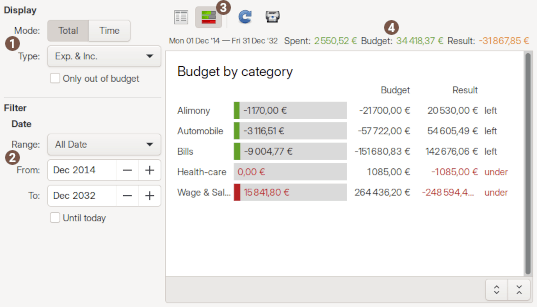

Using budget report
 Display
Display
| View by | select category/subcategory |
|---|---|
| Type | specify the result should be computed for:
|
| Only out of budget | will only show the item that are not on track |
Date filter
| Range | fast select a date with predefined range |
|---|---|
| From / To | specify date bound limit to restrict the results to |
 Tool bar
Tool bar
The tool-bar is the main control of the display. All tool-button have a tool-tip that will help you know what action will be launched when you click on the tool-button. The icon appear or not depending the context.
At the end of the toolbar, there is an export button that enable Result or detail of transaction to copy to clipboard or export into a CSV file
 Total
Total
This is the total of columns of the list-view for: Spent, Budget and Decay
 Result list / Bar chart
Result list / Bar chart
The result list display the computed amounts according to the current selection.
 Transaction detail list
Transaction detail list
The transaction detail list will show every transaction of the selected item in the above result list.
The columns visible in that list are those configured in the account window.
By default it is not visible. Use the tool-bar 'Toggle detail' button for changing this.